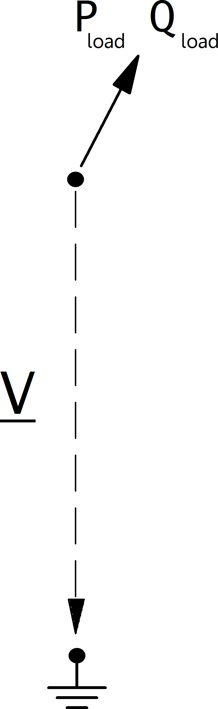

Load¶
Примечание
Loads should always have a positive p_mw value, since all power values are given in the consumer system. If you want to model constant generation, use a Static Generator (sgen element) instead of a negative load.
См.также
Create Function¶
Input Parameters¶
net.load
Parameter |
Datatype |
Value Range |
Explanation |
name |
string |
name of the load |
|
bus * |
integer |
index of connected bus |
|
p_mw* |
float |
\(\geq 0\) |
active power of the load [MW] |
q_mvar* |
float |
reactive power of the load [MVar] |
|
const_z_percent* |
float |
\([0,100]\) |
percentage of p_mw and q_mvar that is associated to constant impedance load at rated voltage [\(\%\)] |
const_i_percent* |
float |
\([0,100]\) |
percentage of p_mw and q_mvar that is associated to constant current load at rated voltage [\(\%\)] |
sn_mva |
float |
\(>0\) |
rated power of the load [kVA] |
scaling * |
float |
\(\geq 0\) |
scaling factor for active and reactive power |
in_service* |
boolean |
True / False |
specifies if the load is in service. |
controllable** |
bool |
States if load is controllable or not, load will not be used as a flexibilty if it is not controllable |
|
max_p_mw** |
float |
Maximum active power |
|
min_p_mw** |
float |
Minimum active power |
|
max_q_mvar** |
float |
Maximum reactive power |
|
min_q_mvar** |
float |
Minimum reactive power |
*necessary for executing a power flow calculation.
Примечание
The apparent power value sn_mva is provided as additional information for usage in controller or other applications based on panadapower. It is not considered in the power flow!
Electric Model¶
Loads are modelled as PQ-buses in the power flow calculation, with an option to use the so-called ZIP load model, where a load is represented as a composition of constant power (P), constant current (I) and constant impedance (Z):
{kind=link}
What part of the load is considered constant with constant power, constant current or constant impedance is defined as follows:
The load power values are then defines as:
Result Parameters¶
net.res_load
Parameter |
Datatype |
Explanation |
p_mw |
float |
resulting active power demand after scaling and after considering voltage dependence [MW] |
q_mvar |
float |
resulting reactive power demand after scaling and after considering voltage dependence [MVar] |
The power values in the net.res_load table are equivalent to \(P_{load}\) and \(Q_{load}\).